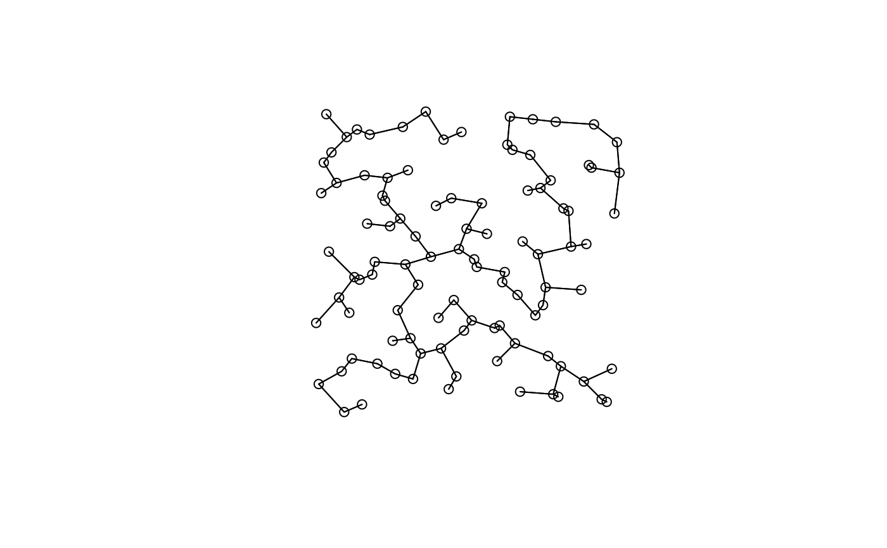

R/listw.candidates.R
listw.candidates.RdThis function is a user-friendly way to create a list of one or several spatial weighting matrices (SWM) by selecting a set of predefined connectivity and weighting matrices (B and A matrices, respectively).
Vector, matrix, or dataframe of point coordinates
Coding scheme style (see nb2listw of the spdep
package). Can take values 'W', 'B', 'C', 'U', 'minmax', and 'S'; default is
'B'
Defines how the B matrix (connectivity) is build:
del Delaunay triangulation
gab Gabriel's graph
rel Relative neighbourhood graph
mst Minimum spanning tree
pcnm Distance-based SWM based on the principal
coordinates of neighbour matrices (PCNM) criteria (see
'Details')
dnear Distance-based
Only considered if nb = "dnear". A single value defining the distance beyond which
two sites are connected (i.e., minimum distance between two neighbor sites). The default
value is 0 (no constraint on the min distance). d1 must be smaller than d2
Only considered if nb = "dnear". It defines the connectivity
distance threshold below which two sites are connected (i.e., maximum distance between two
neighbors. It can either be a single value or a vector of values, in which case a
different SWM will be generated for each threshold value. The default value is the
minimum distance keeping all points connected (i.e., the largest edge of the minimum
spanning tree)
Defines how the A matrix (weighths) is build:
binary without weights
flin Linear weighting function
fdown Concave-down weighting function(see Details below)
fup Concave-up weighting function (see Details below)
Single value or vector of values of the y parameter
in the concave-down weighting function; default is 5
Single value or vector of values of the y parameter
in the concave-up weighting function; default is 0.5
A list of SWMs. Each element of the list was built by
nb2listw (package spdep) and therefore is of class
listw and nb. The name of each element of the list (SWM)
is composed of the corresponding B and A matrices, followed (if any) by the
y parameter value of the weighting function.
The function allows constructing SWMs based on any combination
of B and A matrices. The B matrices are either graph-based or
distance-based. The function proposes the Delaunay triangulation, Gabriel
graph, relative neighbourhood graph, and the minimum spanning tree criteria
to build a graph-based B matrix. Distance-based SWMs can be built
with the principal coordinates of neighbour matrices (PCNM; Borcard and
Legendre 2002) criteria (see details below), or using another threshold
distance to define the connected site pairs. The A matrix can be based on a
binary, linear, concave-down, or concave-up function. The linear,
concave-down, and concave-up weighting functions are defined by \(1 -
(D/dmax)\), \(1 - (D/dmax)^y\), and \(1 / D^y\), respectively, where
D is the euclidean distance between the two sites considered,
dmax is the maximum euclidean distance between two sites, and
y is a user-defined parametre that can either be a single value or a
vector of values. The choice nb = "pcnm" consists in constructing a
distance-based SWM based on the largest edge of the minimum spanning
tree as a connectivity distance threshold, and then by weighting the links
by the function \(1-(D/(4*t))^2\), where D is the euclidean
distance between the sites, and t is the distance threshold below
which two sites are considered connected (Dray et al. 2006). As optimizing
the choice of a SWM has to be done with a p-value correction depending
on the number of candidate SWMs tested (see function
listw.select), Bauman et al. (2018) strongly encouraged plotting the
concave-down and concave-up weighting functions with several parametre
values in order to only choose the realistic ones to build the candidate W
matrices (e.g., ranging between 0.1 and 1 for the concave-up function, as
values over 1 would make no ecological sense). First visualizing the
connectivity schemes with the listw.explore function may also help
choosing the B matrices to select for the listw.candidates function.
Spatial eigenvectors can be generated from any candidate SWM obtained by
listw.candidates using scores.listw, or can be generated
and tested (recommended option for real data analysis) using
mem.select. If several SWMs were created, the selection of an
optimized SWM can be made using listw.select.
Bauman D., Fortin M-J., Drouet T. and Dray S. (2018) Optimizing the choice of a spatial weighting matrix in eigenvector-based methods. Ecology
Borcard D. and Legendre P. (2002) All-scale spatial analysis of ecological data by means of principal coordinates of neighbour matrices. Ecological Modelling, 153, 51–68
Dray S., Legendre P. and Peres-Neto P. R. (2006) Spatial modeling: a comprehensive framework for principal coordinate analysis of neighbor matrices (PCNM). Ecological Modelling, 196, 483–493
### Create 100 random sampling locations in a squared grid of 120 x 120:
xy <- matrix(nrow = 100, ncol = 2)
xy[, 1] <- sample(c(1:120), 100, replace = FALSE)
xy[, 2] <- sample(c(1:120), 100, replace = FALSE)
### The function listw.candidates is used to build the spatial weighting matrices that
### we want to test and compare (with the listw.select function). We test a Gabriel's graph,
### a minimum spanning tree, and a distance-based connectivity defined by a threshold
### distance corresponding to the smallest distance keeping all sites connected (i.e.,
### the defaut value of d2). These connectivity matrices are then either not weighted
### (binary weighting), or weighted by the linearly decreasing function:
candidates <- listw.candidates(coord = xy, nb = c("gab", "mst", "dnear"),
weights = c("binary", "flin"))
#> Warning: zero sum general weights
#> Warning: zero sum general weights
names(candidates)
#> [1] "Gabriel_Binary" "Gabriel_Linear" "MST_Binary"
#> [4] "MST_Linear" "Dnear19.21_Binary" "Dnear19.21_Linear"
plot(candidates[[1]], xy)
plot(candidates[[3]], xy)

### Construction of a different list of spatial weighting matrices. This time, the
### connexions are defined by a distance-based criterion based on the same threshold
### value, but the connections are weighted by the concave-down function with a y parameter
### varying between 2 and 5, and a concave-up function with a y parametre of 0.2.
candidates2 <- listw.candidates(coord = xy, nb = "dnear", weights = c("fdown", "fup"),
y_fdown = 1:5, y_fup = 0.2)
#> Warning: zero sum general weights
#> Warning: zero sum general weights
#> Warning: zero sum general weights
#> Warning: zero sum general weights
#> Warning: zero sum general weights
### Number of spatial weighting matrices generated:
length(candidates2)
#> [1] 6
### A single SWM can also easily be generated with listw.candidates:
lw <- listw.candidates(xy, nb = "gab", weights = "bin")
plot(lw[[1]], xy)
### Generating MEM variables from an object of listw.candidates with scores.listw:
MEM <- scores.listw(lw[[1]])
### See functions mem.select and listw.select for examples of how to use an object
### created by listw.candidates with these functions.